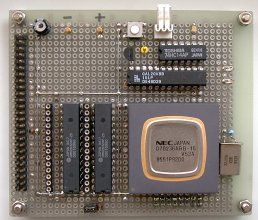

お手軽 V53Aボードマイコン
1998. 11. 15

1998. 11. 15
V53Aを使ってボードマイコンを自作ってみました。V53Aは機能的には V50とほぼ同等となっていて、それのコアプロセッサを V30から V33Aに置き換えたようなものです。秋葉の店頭では 1個数千円で売られていましたので、ちょっとスピードを稼ぎたいとき(V50比で5倍程)などには重宝する石だと思います。
今回は V53Aを使ってみるのが目的ですので、とりあえずモニタが動作するには ROMと RAMを付けるだけで OKです。また、これまでのシリーズの流れとして共通の拡張バスを付けて、別に紹介している汎用CRT I/Fやビデオタイトラーなどに直結して制御できるようにしました。
メモリ・I/Oマップは右の IMGのようになっています。V53Aの拡張アドレス機能は使用せず 1MBメモリ空間のみを使用します。ROM空間は 64KBをデコードしていますが、ROM が32KBなので、半分はイメージになります。また、I/O空間は下位8bit分のみ使用し、前半に内蔵ペリフェラルを、後半を拡張バスに割り当てます。FF00〜FFFFまでは内蔵のシステム制御レジスタです。
これらの仕様により、V53Aボードの回路図ができました。RAMエリアのバス幅は 16bit、それ以外は 8bitとしました。
左の IMGが製作した V53Aボードです。1チップマイコンなので、配線はそれ程多くはありません。ただ、アドレスデコーダには PLDを使用しましたので、同じ物を作る場合は PLDを書き込める環境が必要です。
V53Aは、他の組み込み用マイコンとは少し違い、ある程度の汎用性を持たせるためか、割り込みが内部接続されていません。したがって、外部で割り込み要因を接続する必要があります。このため、チップ汎用のモニタプログラムは作れません。モニタプログラムもその接続に合わせる必要があるからです。端末の仕様は、N81 38400bpsで、パソコンのシリアルポートへ直結できます。
V53A monitor program R0.1 >? [Command List] ? - Command list D [<s.adr>] [<e.adr>] - Dump memory E <adr> [<dat>] - Edit memory F <s.adr> <e.adr> <dat> - Fill memory I <adr> - Input port IR <adr> - Input port repeat O <adr> <dat> - Output port >d 80000 80000 25 00 04 02 A1 03 85 02 00 88 04 02 00 00 00 00 80010 94 80 00 C0 20 20 40 04 00 00 10 01 01 20 60 04 80020 06 04 04 00 06 80 28 00 01 02 18 00 01 08 68 00 80030 04 66 84 00 00 00 64 21 00 00 00 04 38 20 44 00 80040 20 00 02 00 22 00 A4 00 22 24 02 04 00 04 00 00 80050 0D 00 00 00 44 00 02 00 08 02 04 00 00 00 00 00 80060 21 22 00 00 31 00 01 40 89 10 00 40 00 00 84 22 80070 82 A3 84 00 04 11 00 00 40 04 01 04 41 44 9B 01 > |

{kind=link}
{kind=link}